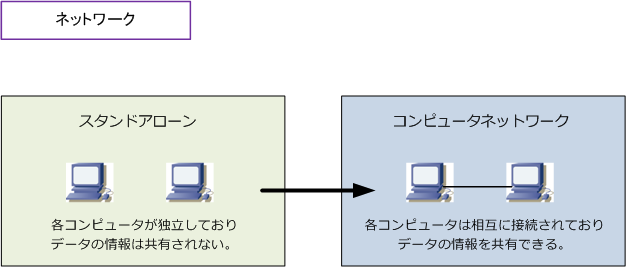
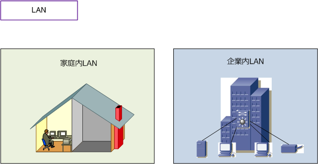
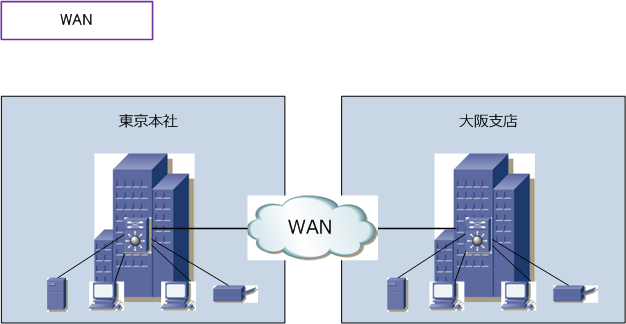
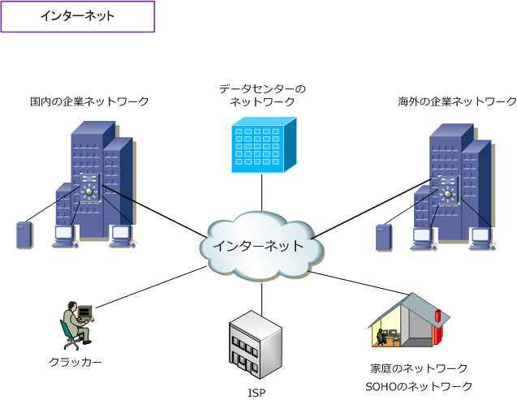

Network
スタンドアロンからネットワークへ
コンピュータが誕生した頃、コンピュータは単体で他のコンピュータと接続しない形態で利用していました。 この利用形態をスタンドアローンと言います。コンピュータの進化につれて、コンピュータは相互に接続し 利用されるようになります。複数台のコンピュータをケーブルや電波などで相互に接続して、相互に情報を やりとりする仕組みをコンピュータネットワークと言います。この仕組みは単にネットワークとも言います。

コンピュータネットワークはとても偉大
パソコンをネットワークに接続することにより、複数のPCがプリンターの利用を共有することができます。 つまり、ハードウェアリソースの共有が可能です。また、サーバにあるファイルデータを複数のPCで共有 できたり、一元管理することができます。つまり、ソフトウェアリソースの共有をすることができます。
さらに、地理的に離れていてもネットワーク接続することで、例えば大阪支店のPCが東京本社のサーバの データにアクセスすることができます。そして、インターネット接続できればWebサイトにアクセスして 幅広い情報を収集したり、メールソフトにより世界中の人とメールの送受信が可能となります。
コンピュータネットワークの分類
コンピュータネットワークは規模に応じてLAN、WAN、インターネットに大きく分類することができます。
LAN (Local Area Network) とは、同じ建物の中にあるコンピュータ、プリンタ、サーバなどを接続して データをやり取りするネットワークのことです。LANといっても、家庭内で数台のPCを相互接続している LAN（家庭内LAN）や、企業内で数百台のPCなどを相互接続しているLAN（企業内LAN）などがあります。

WAN (Wide Area Network) とは、地理的に離れた場所にあるコンピュータなど相互接続して、データを やり取りするネットワークのことです。WANはNTT、KDDI、ソフトバンクといった通信事業者が提供する サービス（広域イーサネット、IP-VPNなど）を利用します。このWANによって、本社と支店の企業内LAN を相互接続したり、異なる場所にある大学のキャンパスLANを相互接続したりすることが可能となります。

インターネットは、世界の全てのネットワークを相互接続した巨大なコンピュータネットワークのこと。 家庭内LAN、大学キャンパスLAN、企業内LANなど、世界中の様々なネットワークが接続されています。 インターネットは全体を統括するコンピュータは存在せず、全世界に分散された無数のコンピュータが 少しずつサービスを提供することで成り立っています。例えば、当方のWebサイトもインターネットの 一部です。インターネットには、PCだけではなく、スマホなどの様々なメディアからアクセスできます。

イントラネットとは、このインターネット標準技術を用いて構築された企業内ネットワークのことです。 インターネット標準技術とは、プロトコルにTCP/IPを利用した電子メールのシステム、Webのシステム などのことです。イントラ（内部的な）ネットでは特定の組織内メンバーだけが閲覧できるWebサーバが あったり、特定の組織内のメンバーだけでメールの送受信ができるなど閉じたネットワークのことです。 イントラネットが外部接続（インターネット接続）する場合、ファイアウォール等をその間に設置します。 ※ インターネットが世界規模の開かれたネットワークであるのに対し、イントラネットは企業規模の組織内ネットワークです。